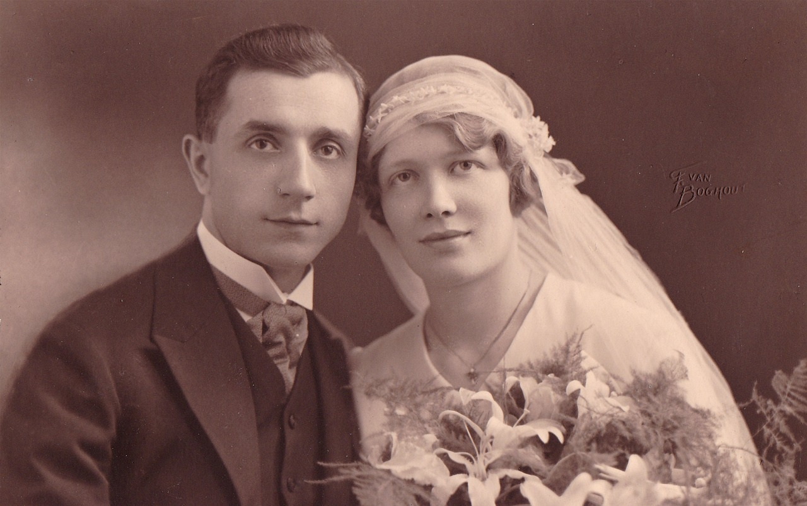
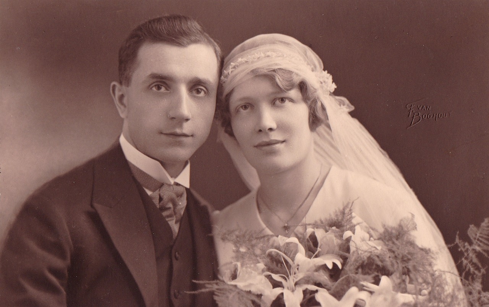

Para recordar el paraíso de Cancún antes de que lo hicieran paraíso

Antes de que Cancún se convirtiera en el vibrante epicentro turístico internacional que conocemos
Imagina un lugar donde el sonido del mar y el canto de las aves se mezclan con el murmullo de la selva. Así era Cancún en sus inicios, un territorio inexplorado y lleno de posibilidades.
¿Qué significa Cancún para el resto del mundo? Para muchos, un destino paradisíaco; noches de fiesta interminables y algunas las playas más hermosas de México. ¿Qué pensarías si te dijera que detrás de ese nombre, hay una historia que comenzó mucho antes de los resorts y las playas atestadas de gente?
Hoy, entre los modernos hoteles y las avenidas transitadas, aún se pueden escuchar los ecos de aquel Cancún que ya no existe. Voces que nos cuentan cómo era vivir en estas tierras, cuando las aguas cristalinas no eran el atractivo principal, sino el sustento de una comunidad que crecía con el mar y la selva. Un lugar que, con el tiempo, cambiaría para siempre.
Pero ¿qué se perdió en esa transformación? ¿Qué quedó de aquel pequeño pueblo pesquero, enterrado bajo el peso del turismo? Mientras el sol baña las arenas blancas, las memorias de los primeros habitantes sobreviven, y con ellas, una historia que merece ser contada.
Este es el Cancún que pocos conocen
El documental está dividido en tres capítulos, diseñados para llevarte por el camino de la historia y evolución de Cancún. En ellos descubrirás sus inicios como un pequeño pueblo pesquero y la transformación que lo convirtió en un destino turístico de renombre mundial. Cada capítulo te acerca a entender no solo lo que fue, sino lo que sigue siendo este lugar único.
CAPITULO 2
Lecciones de Resiliencia
¿Qué sucede cuando la fuerza de la naturaleza se enfrenta a la fragilidad de un nuevo destino turístico? En esta sección, reviviremos el paso del huracán Gilberto en 1988, un acontecimiento que marcó un hito en la historia de Cancún. Este relato no solo es sobre la reconstrucción de edificios, sino también sobre la transformación de corazones y mentes.
CAPITULO 3
ENTRE PASADO Y EL PRESENTE
Cancún no solo ha cambiado físicamente; su esencia cultural ha sido moldeada por el tiempo y el turismo. A través de las voces de quienes han vivido este cambio, comprenderás cómo el sentido de pertenencia y conexión se ha visto alterado por la llegada de nuevos rostros.
Jorge Durán | Periodista e Historiador de Cancún
Jorge Durán llegó a Cancún en 1978, cuando aún era un pequeño poblado en desarrollo, lleno de esperanza y posibilidades. Como periodista, Durán se ha dedicado a documentar el crecimiento de Cancún desde sus días iniciales hasta la imponente ciudad turística que es hoy.
VOCES DE LA HISTORIA
Areli Sánchez | Trabajadora de la CONANP
Areli Sánchez, trabajadora de la Comisión Nacional de Áreas Naturales Protegidas (CONANP), ofrece una visión fundamentalmente ecológica del cambio en Cancún. Desde su rol en la CONANP, ha sido testigo de cómo el turismo y el desarrollo han impactado en el ecosistema y la biodiversidad local.
VOCES DE LA HISTORIA

Wolfgang Gust | Ex Guía Turístico
Wolfgang Gust, ha tenido una perspectiva de primera mano sobre la evolución del turismo en Cancún y cómo este cambio ha impactado a los visitantes y locales por igual. En un inicio, Cancún era un destino para quienes buscaban una conexión con la naturaleza y la cultura maya. Con el tiempo, sin embargo, notó que los turistas comenzaron a esperar una experiencia más comercializada, llena de comodidades y servicios que desdibujaban la esencia original de Cancún.
VOCES DE LA HISTORIA
Carlos Cardín Pérez | Ex Presidente Municipal de Cancún
Carlos Cardín Pérez, uno de los principales actores en la administración de Cancún durante sus primeras etapas de desarrollo, no solo presenció, sino que fue parte activa en el proceso de transformación de la ciudad. Como expresidente municipal, Cardín tuvo la responsabilidad de implementar políticas de desarrollo y ordenamiento territorial en un periodo crítico.

VOCES DE LA HISTORIA
CONOCE SUS
HISTORIAS...
PAULINA CAUICH CHI
Conoce más de su historiaLAURA MARGARITA CAUICH CAUICH
Conoce más de su historiaELSI MARIA ORTIZ RODRIGUEZ
Conoce más de su historia

CANCÚN:
ANTES Y AHORA
Welcome to the Documentary
 

MEMORIAS DE...
ELSI MARIA ORTIZ RODRIGUEZ
Lejos de la playa. Llegaba a nuestro carrito. Caminábamos, llegábamos a Puerto Juárez. Que era lo primero que hubo, Puerto Juárez, ya después de Puerto Juárez. Vamos a caminar a la orilla. Caminamos y caminamos. En aquella época había cocales, daba el coco para sacar la copra.
Había mucho, muchas matas de uva, en ¿Cómo se llamaba este? que parecían algodones. ¿Cómo se llaman aquellos que parecían algodones hija? No, no, no, eh después de la uva, jicaco. Jicacos. Cosechábamos jicacos, habían rosados, grandotes, traíamos plantas para hacer dulces.
Comíamos en la orilla, en la playa. Poníamos nuestras hamacas, ni quién nos molestara o robara algo. Hoy no puedes poner una hamaca, tienes que pagar para poder entrar a la playa, todo está saturado, qué lástima, qué lástima de veras. Fue muy bonita aquella época. Lo que es ahora para pasar el puente, tres rolitos poníamos para pasar al otro lado de la playa. Sí, rolitos, rolitos, era una cosita nada el río para poder pasar donde está ahorita este. Pues sí, ahora ya es grande ahí, todo lo rellenaron, todo lo rellenaron los hoteles. Ahorita no puedes ir a, por ejemplo, al hotel, que era muy famoso, este ¿cómo se llamó este hotel?, un hotel muy bonito. Entrábamos, nos daban permiso, nos bañábamos ahí todo, ahora hay que pagar, muy bonito. Sí, ya luego se hizo grande Cancún, como está ahora. Pero fue muy bonito Puerto Juárez, muy bonito puerto, bueno, no sé por qué no lo hicieron grande Puerto Juárez.
Sí, sí Puerto Juárez. No ¿qué caracoles? ¿qué langosta? ¿qué esto? No ni te cobraban, te lo regalaban. Mi papá tenía compadres ahí y no nos costaba nada la comida. Paseos en lanchas lanchitas, lanchitas, nada de motores, nada, lanchitas sí, pero muy bonito, muy bonito Puerto Juárez, Isla. Mujeres.
Sí, sí, también en lanchita. Íbamos a unas fiestas que se hacían de San Isidro Labrador. Mataban puerco, llegaban los músicos desde maracas y guitarras, era una orquesta, sí, pero muy bonito. Y es bonito recordar todo eso. Cuando hicieron el aeropuerto de Cancún eran puros palitos. Muy bonito.
MEMORIAS DE...
LAURA MARGARITA CAUICH CAUICH
Tenía como ocho años cuando iba con mi hermano a vender en la isla y pasábamos en lo que es el camino que solamente era una colonia en aquel tiempo que llevaba a puerto juárez agarrábamos el ferry y nos íbamos a la isla a vender lo que había aquí en leona árboles frutales naranja dulce, naranja agria, mandarina, toronja, eso es lo que nosotros nos encargamos de vender en aquel entonces.
José Natividad Cauich Cauich. Nos quitábamos de Leona, íbamos hasta Cancún, a Puerto Juárez, no hay este, no había nada más que la carretera, la carretera que se va hasta Tulum, la Tulum, era una carretera que pasaba directo se va a Tulum, era puro monte el de allá, era puro monte.
Llegamos en Puerto Juárez con cuando se empezó a hacer la carretera de allá, pues en Cancún llegaban los camiones a dormir también. Y allá nos, nos íbamos diario con los camioneros yucatecos de allá, de allá, entonces, buscó mi hermanita, pues vamos a vender las chinas y cruzábamos hasta la isla, nos subíamos al barco, íbamos a vender chinas, naranjas, y este pues a veces cuando hay el nance, pues nance, mandarina, todas esas cosas es lo que vendíamos allá.
Sí, pero Cancún no, no, no había nada de, más que la carretera que te digo que se va hasta Tulum. ¿Y cómo llegaba hasta Cancún en ese momento? En camión, en camión de pasada apenas, apenas abrió la carretera también y empezamos a ir a Puerto Juárez. Ah, sí, sí.
Pues caminamos con mi hermanita cuando llegábamos temprano y llegábamos de la isla de la venta, cuando llegábamos con Laura pues íbamos allá en las orillas de la playa, y le digo, vamos por acá a ver si, parece que hay jicacos en la orilla de la playa, le digo, donde esta la arena, vamos me dice, y pues así llegábamos a, no caminábamos mucho pues estaban las matas cerca, cerca, apenas de Puerto Juarez, no se había privatizado nada, y pues ahí en la orilla llegas allá y estas llenando tu bolsita de jicacos y pues ya, y venimos, llegamos en el camión y ya va a salir el de las 3, es el camión que pasa a las 3 y se va hasta en leona a dormir, para a las 7 de la mañana ya se va y llega hasta a Valladolid.
MEMORIAS DE...
PAULINA CAUICH CHI
Monte, monte, casitas, casitas no adecuadas, un camino no muy bien que digamos, hasta llegar en el crucero, seguimos caminando hasta Puerto Juárez de Puerto Juárez, pues sí, había, sí había casas más grandes, pero no como ahora, que todo ya cambió.
Entonces, en ese lugar donde te digo que está el cinema era una calle no muy bien traficada que se diga, porque había charcos y todo, no como ahora que sigue igual, sigue igual porque no se compone muy bien. Entonces hasta en el crucero, se veía así, no.
En ese de tiempo decían que tenían puesto una tienda grande, ¿cómo se llamaba esa tienda, gigante? Es un súper grande el que tenían allá. Eso es cuando ya, ya empezaron de trabajar y ya botaron todas las casitas que había antes.
Porque ahí había mucha gente con dinero allá, por lo visto, pero tienen muchos puestos que todos se vinieron para abajo cuando llegó la orden de la ciudad y empezaron a tirar las casas, entonces los botaron a todos. Hay comercios de líneas como de roperos, de cosas.
Sí, así todas las cosas, lo llegué a ver, todo eso llegué a verlo cuando derrumbaron todo. ¿Y dónde quedaron las casitas? Hasta un muchacho vivía allá de acá. Allá tuvo su terrenito y le hizo su casita, hasta eso derrumbaron, pero se lo cambiaron por otro lado, del terreno.
Todo eso estaba muy bonito cuando uno está llegando en otro lado de dónde no has visto para nada. Entonces, porque como te digo que en el crucero había mucha gente que era un centro donde se consigue trabajo, hay mucha gente que busca trabajadores, pues hay mucha gente que necesita y entonces sí se prestan para las cosas que se buscan.
Y ya, pues los contratan, van para el derrumbe de las casas, todo eso hay que pagarlo. Entonces es por eso que necesita la gente que, aunque no quiera pagar, pero tienen que pagar porque todo ese trabajo lo tiene que hacer la gente. Hasta que por fin nosotros llegamos a Puerto Juárez, pues nunca habíamos visto una playa, nosotros somos de Yucatán y de Yucatán para acá.
De Yucatán a Leona Vicario. Después nos encaminamos para ir hasta Cancún, bueno, en ese tiempo no era Cancún ¿o sí? no era Cancún, era Puerto Juárez nada más, era Puerto Juárez nada más, porque todo lo que lo abarca es Puerto Juárez, todo lo que lo abarca.
Por eso hasta en el centro donde tienen puesto a Benito Juárez, eso dice Benito Juárez, eso es donde están, dónde está la... ¿como le dicen? la presidencia. Eh, todo eso era un caminito, yo voy, yo si iba caminando por allá, llegué hasta la presidencia, estaba muy destruido todo, pero cuando se volvió ciudad, entonces todo cambió, todo cambió. Es cuando pusieron su estatua entonces de Benito Juárez, porque era el nombre de un presidente de la República.
Allí turistas no se veían de antes, allá pura gente trabajadora que tenía cargado su mochila, andando, buscando trabajo, allá. No, no hay turismo, no había llegado el tiempo de que de verdad vayan, venga tanta gente a visitar porque pues no era ciudad, no tenían hasta entonces que compusieron todas las playas, caminos, le pusieron nombre a todos.
Entonces allá cambia todo.